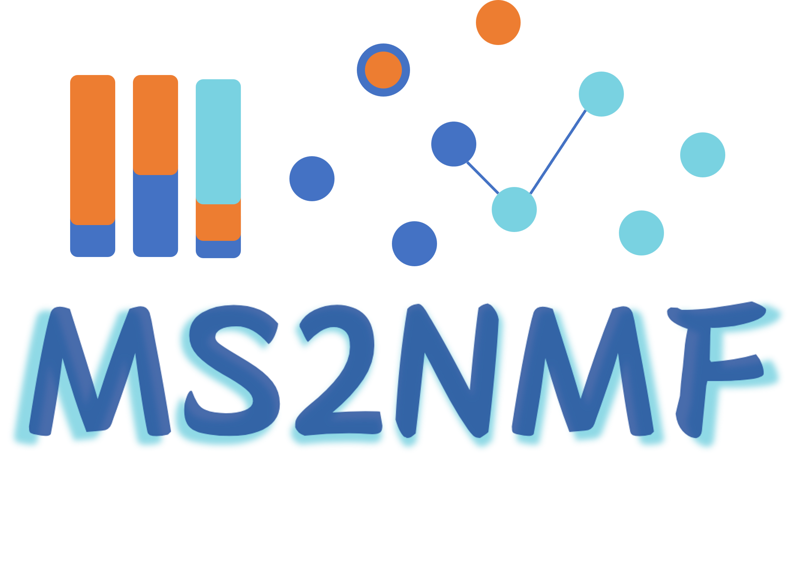

MS2NMF
Home
Analysis
Data Preprocessing
Matrix Construction & Optimization
NMF Decomposition & Visualization
About
Contact

Structure-Sensitive MS² Data Analysis via Nonnegative Matrix Factorization
Data Preprocessing
Import MS/MS data (MGF, CSV)
Perform precursor-level filtering using target-specific diagnostic rules.
Enrich structurally informative spectra while removing irrelevant signals.
Matrix Construction & Optimization
Build an initial sample × fragment intensity matrix.
Binning: reduce redundancy, correct centroid drift.
Structure-guided filtering: keep fragments consistent with chemical rules.
Frequency-adaptive partitioning: suppress low-specificity noise, preserve informative ions.
Output: optimized matrix V with better chemical interpretability.
NMF Decomposition & Visualization
Decompose matrix V into W (sample contributions) and H (fragment patterns).
Select component number k based on reconstruction error & explained variance.
Use UMAP projection with cosine-similarity edges to integrate clustering and connectivity.
Highlight unannotated clusters to guide discovery of novel compounds.